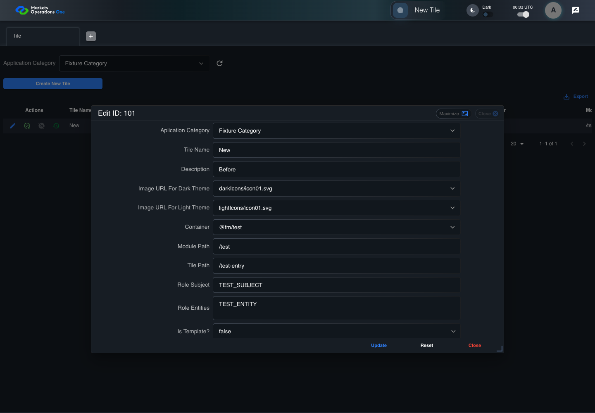

UX-054 administration boundary with step screenshots
PASS · application/run-050/ux-054-administration-boundary-with-step-screenshots-48e82d94297f-attempt-1 · ACTUAL_APPLICATION_LOCAL_SERVICES
Actual React administration screens. Controlled browser credentials, role, records, and BFF responses. Save probes persist the received UI payload without replacing it with expected values. Declared clock emulation controls field timers. Proposed accessibility and source-risk expectations remain separate from business approval.
2026-10-22T06:02:07.702Z to 2026-10-22T06:02:18.002Z
Assertions and result · Artifact manifest · Exact run inputs and source hashes
Result SHA-256:d5589e6c6f853bfb360e7980eda6c5acebef6c66602b890515430fac85b36b9dMachine observations
- captured-update-payload.json
a506667ddea2fcdff2141004d97ad31392db6ab6c2c5e0a5be93c3c78e026b6a - persisted-received-payload.json
06bb782dd28163ce777aa4931c51c33b15e1cade9cd42caa49af1dd3fbe325bb - ui-origin-admin-requests.json
8f26f4d5881405c35f0c71419fa682a6934c97b8a90e1d226b864b6fdc18066a
Screenshot capture: CAPTURED. Named frames: 11.
Step screenshot evidence: COMPLETE. 10/10 canonical steps have execution screenshots.
Canonical step timeline
Given ADMIN-A has T1 record101 loaded with Tile Name "Old" and a request-persisting successful save fixture
Execution: PASSED.1. step-01 Visible state after step 1: Given ADMIN-A has T1 record101 loaded with Tile Name "Old" and a request-persisting successful save fixture
2026-10-22T06:02:11.659Z · 1440×1000
Step: /Users/lushevol/code/github/ratan-release-impact/workbench/tasks/ui-test-coverage-20261022/test-cases.md:13996
SHA-256:26e70707e237f411341c3c289c45993bd915640d537c9df1b918723168053ec7When ADMIN-A types "New" as the replacement value in the textbox labelled "Tile Name" in the dialog with title text "edit ID: 101" on the administration page
Execution: PASSED.2. step-02 Visible state after step 2: When ADMIN-A types "New" as the replacement value in the textbox labelled "Tile Name" in the dialog with title text "edit ID: 101" on the administration page
2026-10-22T06:02:11.992Z · 1440×1000
Step: /Users/lushevol/code/github/ratan-release-impact/workbench/tasks/ui-test-coverage-20261022/test-cases.md:13997
SHA-256:51ac6b7192bc1744ded3d848c9e108ff32d333ca0bffdff9c21479c99f57aec5And The controlled event loop advances 301 milliseconds from the final input event
Execution: PASSED.3. step-03 Visible state after step 3: And The controlled event loop advances 301 milliseconds from the final input event
2026-10-22T06:02:12.155Z · 1440×1000
Step: /Users/lushevol/code/github/ratan-release-impact/workbench/tasks/ui-test-coverage-20261022/test-cases.md:13998
SHA-256:fd864e476be378692c9e9ed9d60ff66bbe861b6d537e3f07993e30099b693d55And ADMIN-A clicks the button labelled "Update" in the dialog with title text "edit ID: 101" on the administration page
Execution: PASSED.4. step-04 Visible state after step 4: And ADMIN-A clicks the button labelled "Update" in the dialog with title text "edit ID: 101" on the administration page
2026-10-22T06:02:12.555Z · 1440×1000
Step: /Users/lushevol/code/github/ratan-release-impact/workbench/tasks/ui-test-coverage-20261022/test-cases.md:13999
SHA-256:5c7454354ddc335ee683fe4da03c463ff203a86af7e532e22a737abf6b2ec7caAnd The controlled event loop completes every pending field callback and save response
Execution: PASSED.5. step-05 Visible state after step 5: And The controlled event loop completes every pending field callback and save response
2026-10-22T06:02:12.637Z · 1440×1000
Step: /Users/lushevol/code/github/ratan-release-impact/workbench/tasks/ui-test-coverage-20261022/test-cases.md:14000
SHA-256:f02ea3625f808823a7c9ff128f98e608eafbd1c55075c438178efa92fd032c03Then The captured update payload has title equal to "New"
Execution: PASSED.6. step-06 Visible state after step 6: Then The captured update payload has title equal to "New"
2026-10-22T06:02:12.721Z · 1440×1000
Step: /Users/lushevol/code/github/ratan-release-impact/workbench/tasks/ui-test-coverage-20261022/test-cases.md:14001
SHA-256:12228ab70caad3b4da9e160724a7fbf3408cf62f982318a2cca5da5a14edca0bWhen The browser fixture reloads the Tile page from the persisted received payload
Execution: PASSED.7. step-07 Visible state after step 7: When The browser fixture reloads the Tile page from the persisted received payload
2026-10-22T06:02:15.867Z · 1440×1000
Step: /Users/lushevol/code/github/ratan-release-impact/workbench/tasks/ui-test-coverage-20261022/test-cases.md:14002
SHA-256:620df3988fc80ea66d67b2c0cc844a616adec9a6894c0bdc1ee22460b47d5f88Then The Tile grid row with "Record Id" equal to "101" contains "Tile Name" equal to "New"
Execution: PASSED.8. step-08 Visible state after step 8: Then The Tile grid row with "Record Id" equal to "101" contains "Tile Name" equal to "New"
2026-10-22T06:02:16.058Z · 1440×1000
Step: /Users/lushevol/code/github/ratan-release-impact/workbench/tasks/ui-test-coverage-20261022/test-cases.md:14003
SHA-256:a342f0eb33473bdb63a304dd664bfb46dc5f93719175a61f9b14c1422957fb32When ADMIN-A clicks the button labelled "Edit" in the Tile grid row with "Record Id" equal to "101" on the administration page
Execution: PASSED.
9. step-09 Visible state after step 9: When ADMIN-A clicks the button labelled "Edit" in the Tile grid row with "Record Id" equal to "101" on the administration page
2026-10-22T06:02:16.592Z · 1440×1000
Step: /Users/lushevol/code/github/ratan-release-impact/workbench/tasks/ui-test-coverage-20261022/test-cases.md:14004
SHA-256:897ef215a923d8cfddf6bf6664d9d68bd549cd9399671d397a6f5caddd4ca603Then The textbox labelled "Tile Name" in the dialog with title text "edit ID: 101" on the administration page has value equal to "New"
Execution: PASSED.10. step-10 Visible state after step 10: Then The textbox labelled "Tile Name" in the dialog with title text "edit ID: 101" on the administration page has value equal to "New"
2026-10-22T06:02:17.070Z · 1440×1000
Step: /Users/lushevol/code/github/ratan-release-impact/workbench/tasks/ui-test-coverage-20261022/test-cases.md:14005
SHA-256:0cc85af1bc4de5fb4563a396ced726a36a8d82ace82c89e1c5c8ba20d6a4ae3e
Additional named frames
Screenshots establish visible state only. Assertions and traces support functional claims.